Breaking a Form into Sections using Section Selector
Breaking long forms into sections, allows user to navigate to parts of a form without having to scroll.
By default, when users open a form, they will be on the first section of the form which will be indicated in the Section Selector textbox.
The Section Selector drop-down textbox will always be visible on the user interface.
If the form was not split into sections in Form Designer, the Section Selector textbox will not display.
Click the Section Selector drop-down textbox. A list of sections on the form will open. The first option being Show All Sections, followed by numbered sections.
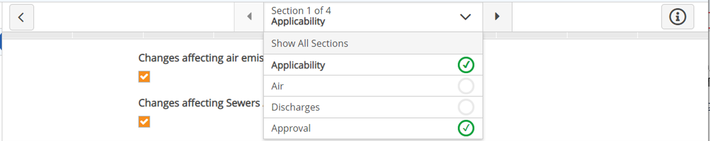
When you select Show All Sections, the whole form displays with section heading breaks.
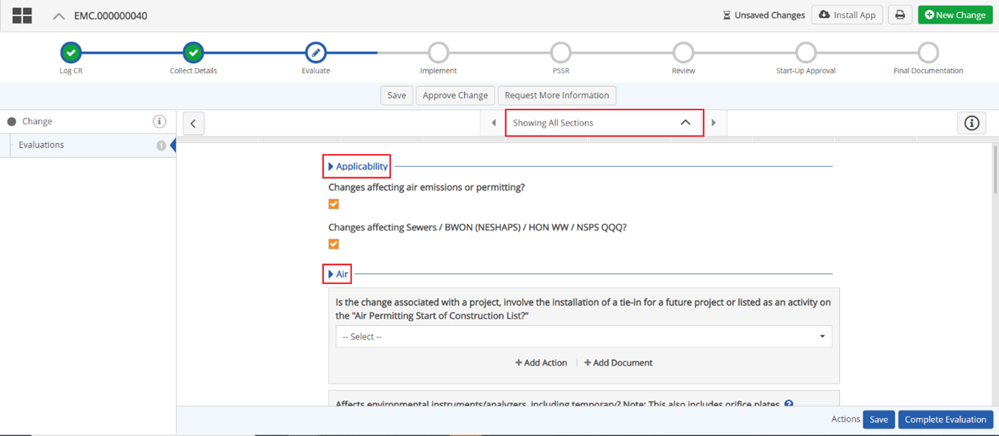
You can navigate to the previous section and next section using the arrows on either side of the Section Selector drop-down text box. When you select Show All Sections both arrows are disabled.
When you select a specific section, the Section Selector drop-down textbox updates to the section you have selected with a section # of # above the section name selected, indicating what part of the form you are currently on.
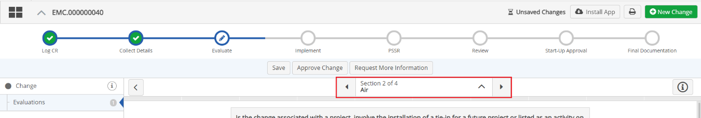
If you are on the first section the left arrow is disabled, if you are on the last section the right arrow is disabled. If you are in any section that is between the first and last sections, the left and right arrow are both enabled.
When you click the print icon all sections display with section heading breaks, regardless of whether you selected Show All Sections, or a particular section in the Section Selector dropdown textbox.
To Add Form Sections:
From the main menu dropdown, select Designer to open Forms Designer.
Click the Forms tab.
Click the Form Type dropdown textbox and select a Form Type.
Click the Workflow Step dropdown textbox and click a workflow step where forms are present, and requires sections.
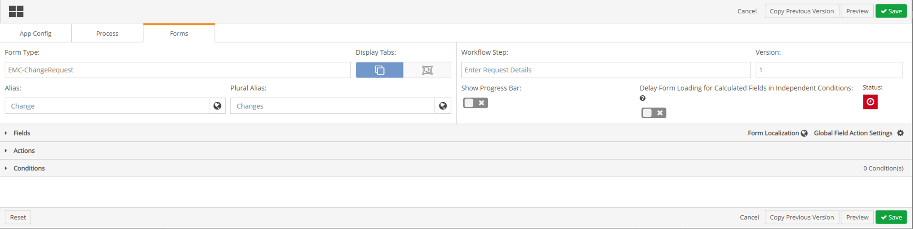
Click the Fields ribbon. The Fields ribbon expands with a menu of Field types below it, and two sections display to the right, Header Fields, and Field Sections.
To the right of the Field Sections, click + Add Section.
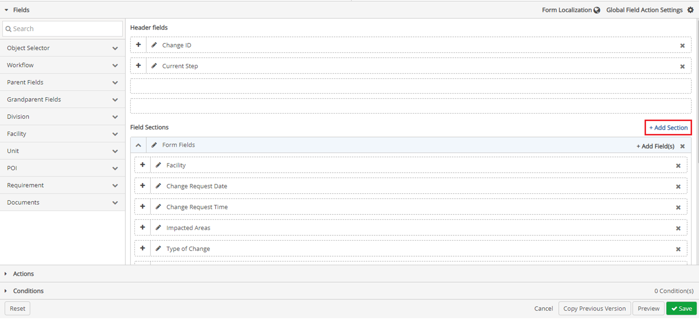
A new section is added below the Form Fields section. By default, this section is called New Section.
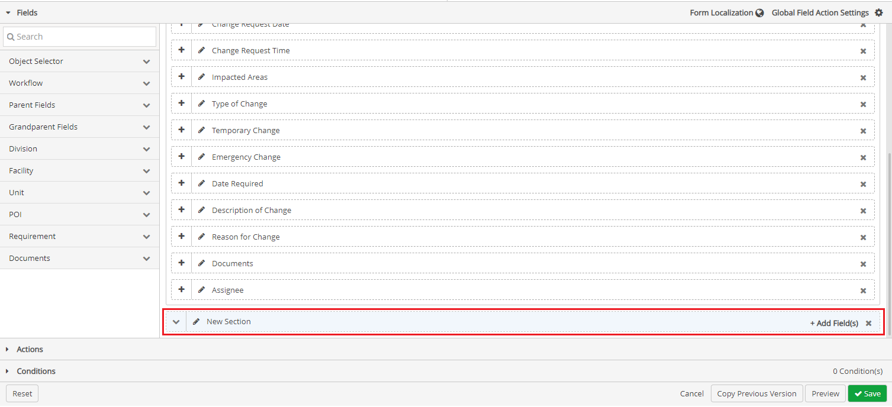
Each section is required to have a unique name within the workflow. Each new section added will be named as “New Section” if there is a section already existing called “New Section” then the next new section created will follow with a number. For example “New Section 1”
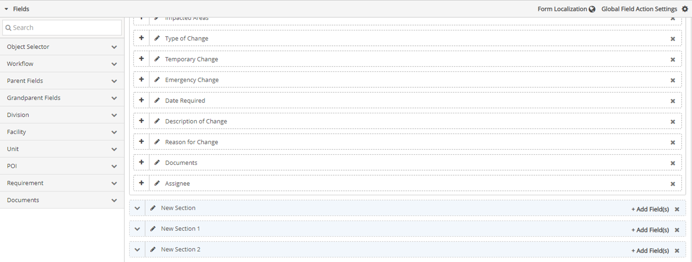
To change the name of the new section, click the pencil icon.
Type in the new name for the section.
The name will be validated to prevent duplication of section names. Section names are limited to 50 characters.
To re-order sections click and drag a section either above or below another section.
To move a field from one section to another click and drag a field from a section that is expanded to a closed section.
Only one section can be expanded at any given time.
To move multiple fields from one section to another:
Click + Add fields in a section. The Add Field(s) window will open.
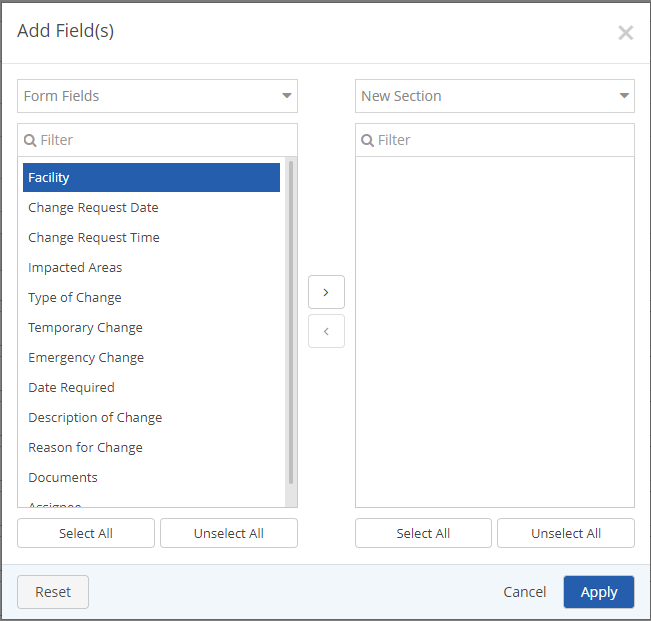
On the right side of the Add Field(s) window select the section where the fields of interest are currently located in and you want to move to a new section.
On the left side of the Add Field(s) window select the new section of where you want to move the fields of interest to.
Select all the fields on the right side that you want to move.
Click the arrow pointing towards to the left side (new section). for the fields to move to the new section.
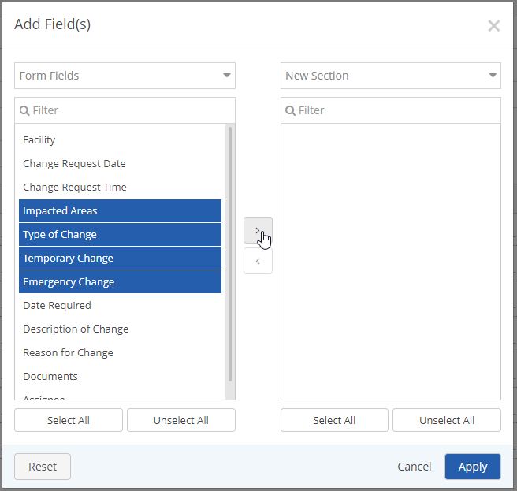
Once the fields of interest are moved to the new section, click Apply.
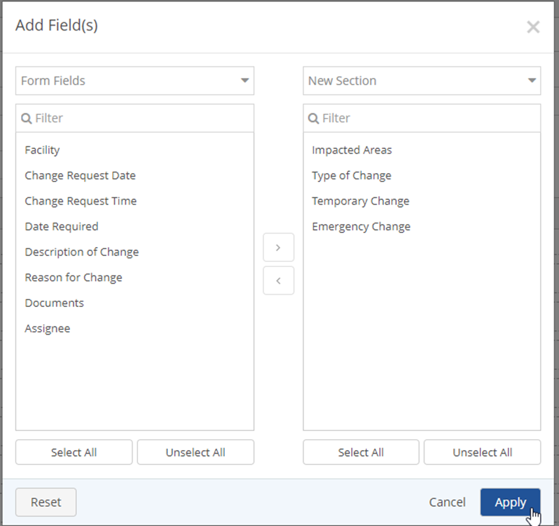
Once fields have been moved to the appropriate sections created, click the Conditions ribbon, to add conditions to fields of a section.
Click + Add Condition. The Add Condition(s) window will open.
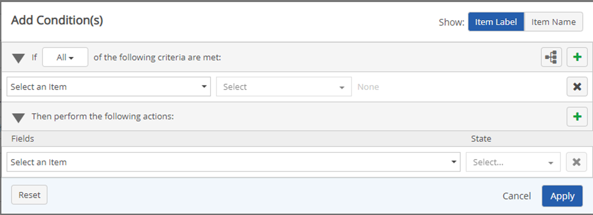
At the top right of the Add Condition(s) window, click Item name in the Show section.
Fill in the If and Then fields on the Add Condition(s) window, and then click Apply. The condition will apply to All fields in a specified section of the form, and the Add Condition(s) window will close.